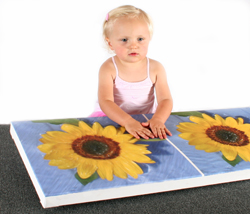
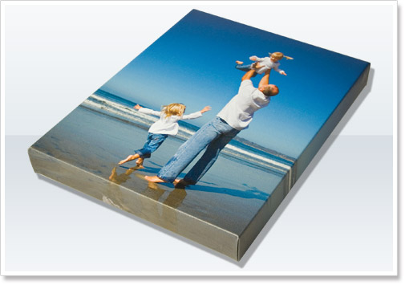

|
|
|
|
Every Fred Marchand Image is printed using the highest level of technology in archival reproduction techniques. Guaranteed not to fade or change in colour. Coated with quality art protectant, each piece of artwork is assured protection against UV light and minor scratches and certified to withstand exposure to sunlight and humidity variations within a normal household environment. Crafted from solid wood, each frame is hand selected and assembled by the team at The Color Fred and has been specifically chosen to perfectly complement the artwork.
A canvas print, also known as a stretched canvas or canvas art, is the result of an image printed onto canvas which is stretched, or gallery-wrapped, onto a frame and displayed. Canvas prints are often used in interior design, with 'stock' images, or customized with personal photographs.
At The Color Fred we provide canvas printing in the form of both Museum Wrap and Gallery Wrap .
A museum wrap is when canvas is stretched over the stretcher bars and stapled on the back of the wrapped canvas. The sides of the canvas do not have any of the image showing. Gallery wrap is a method of stretching an artist's canvas so that the canvas wraps around the sides and is secured to the back of the wooden frame. The frame is usually 1.25" thick. The sides of the canvas are prepared and primed in the same manner as the face, which may then be painted a solid color or painted to continue the image appearing on the face. This method of stretching and preparing a canvas allows for a frameless presentation of the finished painting.
|  |  |
| Example of Museum Wrap | Example of Gallery Wrap |
We have a photo gallery with a wide variety of beautiful images guaranteed to please you with the many different options allowing you to choose the dimensions of the image, the orientation (landscape or portrait), having it museum wrapped or gallery wrapped and wether you want to have our protective spray coating applied to it.